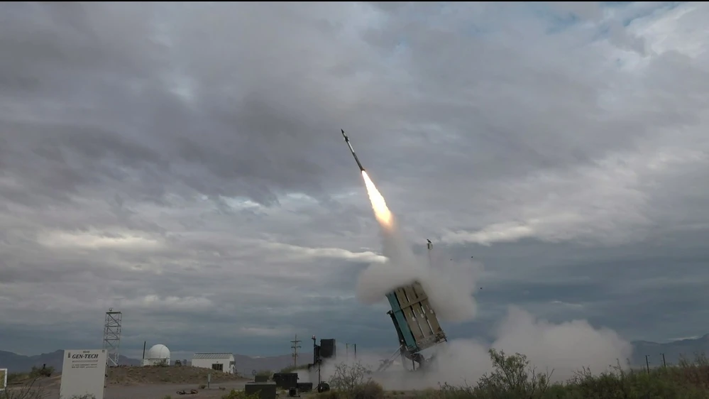
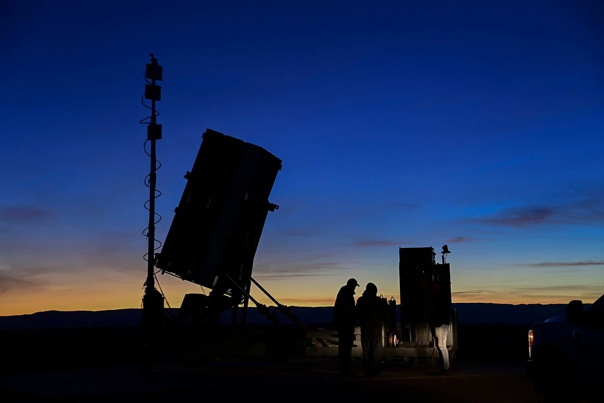

U.S. MARINE CORPS ·
Back to the Future: MRIC and the rebirth of the Corps’ air defense capability
Read the original
As global tensions continue to rise, the Marine Corps once again finds itself at the forefront of a strategic transformation – shifting its focus from a decades-long, land-locked War on Terror to addressing increasing great power competition in the South China Sea.
Recognizing the rapidly shifting security environment outlined in the 2018 National Defense Strategy, General David H. Berger, the Corps’ visionary former commandant, launched Force Design 2030 – a comprehensive modernization effort aimed at preparing the Corps to “serve as a naval expeditionary force-in-readiness and operate inside actively contested maritime spaces in support of joint campaigns.”
As the Corps continues its foundational shift towards the Pacific, however, one thing has become clear: if Marines are to pivot to support distributed maritime operations – operating for extended periods with limited outside support – the need for an organic air defense capability becomes imperative.
Moving to address this new geopolitical reality and shifting security environment, Program Executive Officer Land Systems is preparing to field the Marine Corps' Medium-Range Intercept Capability, or MRIC. This state-of-the-art missile system detects, tracks, identifies and defeats enemy cruise missiles and other manned and unmanned aerial threats.
“MRIC is a middle-tier acquisition rapid prototyping effort, serving as a short-to-medium range air defense system that fills a crucial capability gap in the Indo-Pacific’s contested theater,” said Lt. Col. Matthew Beck, product manager for A-MANPADS/MRIC. “Although it was primarily designed for cruise missile defense, MRIC also boasts capabilities against other airborne threats and has demonstrated a high level of success in integration efforts through a series of live fire events.”
Harkening back to the days of the legacy HAWK system – the Corps’ last medium-range surface-to-air missile, which was divested in the late 90s – MRIC stands as the much-needed response to the evolving challenges of modern warfare by providing the ability to exist and persist within enemy weapon engagement zones. As highlighted in Force Design 2030, this is particularly relevant to the fleet’s operations in the Indo-Pacific, where the warfighter is often positioned squarely within enemy weapons’ reach.
“Simply put, MRIC is designed to protect near fixed and semi-fixed critical assets, primarily from the threat of cruise missiles,” said Beck. “In practical terms, MRIC offers protection for our Marines, allowing them the freedom to conduct operations within an enemy's weapon engagement zone. In short, the warfighter can focus on executing the mission while being shielded from potential threats.”
All this is made possible by the incorporation of existing capabilities. MRIC, which counts the Corps’ Ground/Air Task-Oriented Radar and Common Aviation Command and Control System among its primary subsystems, also incorporates technology from Israel’s proven Iron Dome system.
But the Corps’ new air defense system is much more than a force multiplier; it’s a key example of a successful Force Design 2030 outcome, which calls for “the immediate implementation of an intensive program of iterative concept refinement, wargaming, analysis and simulation, and experimentation.”
“MRIC, our counter cruise missile solution, exemplifies efficient integration and smart acquisition,” said Don Kelley, program manager for GBAD. “We've harnessed field-tested technologies and incorporated them into our system. This comprehensive amalgamation, validated through rigorous live-fire exercises, has enabled us to meet the counter cruise missile capability needs identified in Force Design 2030.”
By using the right acquisition vehicle and striving to avoid “reinventing the wheel,” the MRIC team is on track to go from conception to prototyping in less than five years – lightspeed in acquisition terms. Furthermore, by conducting various rounds of live fire tests and rapid prototyping, Marine experimentation and feedback play a key role in the team’s efforts.
“Force Design 2030 and updates emphasize experimentation and a strong air defense for the Marine Corps,” said Beck. “Middle tier acquisition, with rapid prototyping, aligns with these goals. By integrating high technology readiness level components and seeking Marine feedback through small-scale deployments, we can refine and scale the Medium-Range Intercept Capability and get it to the fleet in a timely manner.”
Although trusting the process brings along many challenges for the team, their creative spirit and commitment to working with the fleet has allowed them to turn challenges into successes.
“The real challenge lies in introducing this unprecedented system to the Marines who have no prior analogous equipment. Our training and logistics teams are rigorously working to ensure we cultivate the right skill set among the Marines to operate this state-of-the-art system effectively, recognizing that even the best capability serves no purpose if our Marines aren’t prepared to use it,” he noted.

Here, we see another clear nod to Talent Management 2030, a personnel management pillar within Force Design 2030 which calls for the alignment of “talents of individual Marines with the needs of the service to maximize the performance of both.”
The team’s success, however, begs the question: is this kind of acquisition success story replicable? According to Kelley, the answer is a resounding yes.
“In my view, effective best practices are rooted in a clear mission, compact and dedicated teams, and unflinching transparency with all stakeholders,” he said. “Crucially, assembling the right personnel, individuals who are proficient or willing to learn, is non-negotiable. We avoid getting entangled in unnecessary bureaucracy, focusing on the essence of policies rather than their letter. By focusing on intent when interpreting requirements, we can streamline our operations to achieve our objectives swiftly, while still adhering to safety and compliance norms. Ultimately, our approach to best practices hinges on effectiveness, agility, and a refusal to ‘reinvent the wheel.’”
Things are moving quickly for the team, and their efforts are poised to pay off.
Barb Hamby, PEO Land Systems spokesperson, recently told Breaking Defense, “A series of activities will take place during fiscal 2023 and 2024, culminating with a quick reaction assessment… for the MRIC prototype, under the Middle Tier Acquisition Rapid Prototyping framework. Both the ongoing certification processes and the quick reaction assessment will inform the Milestone Decision Authority on the potential fielding of the MRIC prototype.”
Moreover, the MRIC team is preparing to hold a quick-reaction assessment in September 2024. If things continue to go to plan, the program could enter production in fiscal year 2025.
In an era characterized by escalating global tensions and the increasing importance of maritime dominance, the Marine Corps is once again demonstrating its ability to adapt, evolve, and rise to new challenges. As the Corps advances towards the transformative vision of Force Design 2030, the successful development and expected fielding of MRIC represent key milestones in this journey. More than just the acquisition of new equipment, MRIC’s successful progression exemplifies the potency of innovation, agility, and strategic international partnerships. It offers more than a solution to a tactical problem, instead symbolizing a rebirth of the Corps’ air defense capability, fitting for the complex battlefields of the 21st century.